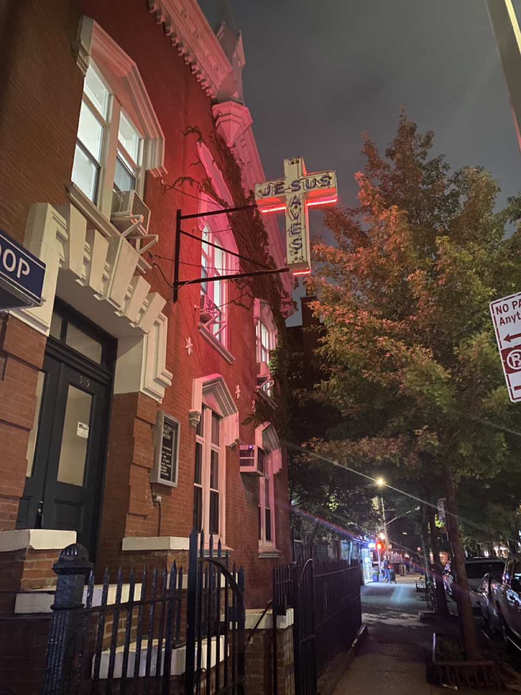
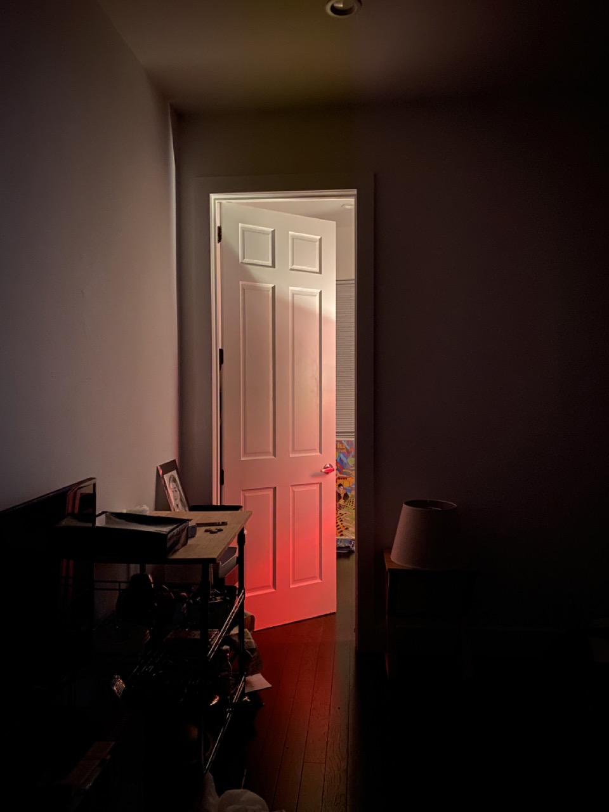

Wednesday, September 7th.
As I was walking, I played Fiona Apple. She reminds me of the color red.
since wednesday I've had Hot Knife stuck in my head
Hot Knife on Spotify
I left at about 7:30 to walk over to a friends house, when I had almost arrived at the apartment,
she called saying she couldnt hang out anymore so I had to turn around and head back to my apartment.
Started at 7:30, arrived at my final destination at 8:30. From my apartment to Washington Square park and back.
Red on my walk home:

